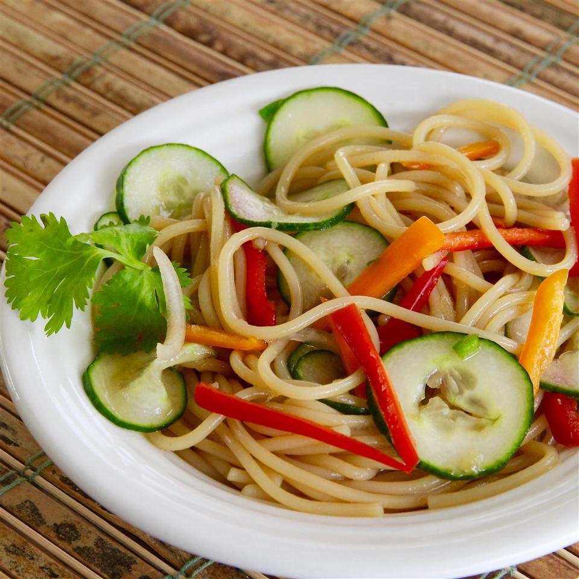

Thai Cucumber Salad with Udon Noodles

Description
Sweet with a touch of heat and very light. With minimum cooking, this is perfect for a summer night. Garnish with cilantro, sesame seeds, and lime wedges, if desired.
Ingredients for Two Servings
- ¼ cup white sugar
- 2 tablespoons water
- ½ tablespoon soy sauce
- ½ teaspoon ground ginger
- ½ clove garlic, crushed
- ¼ teaspoon salt
- ¼ cup rice vinegar
- 4 ounces udon noodles, or more to taste
- 1 English cucumbers, sliced
- ½ large shallot, thinly sliced
- ¼ red bell pepper, thinly slice
- ¼ small Thai chile pepper, minced
Directions
- Combine sugar, water, soy sauce, ginger, garlic, and salt in a small saucepan. Bring to a boil, stirring until sugar and salt are dissolved, about 5 minutes. Remove from heat and cool slightly, about 5 minutes. Stir in rice vinegar to make dressing.
- Bring a large pot of water to a boil. Cook udon noodles in boiling water, stirring occasionally, until noodles are tender yet firm to the bite, 10 to 12 minutes. Drain. Rinse with cold water and drain.
- Transfer udon to a large bowl. Add cucumbers, shallot, red bell pepper, and Thai chile pepper. Pour dressing into the bowl; toss until salad is evenly coated. Let stand to marinate, at least 20 minutes, before serving.
Nutrition Facts for One Servings
296 calories; protein 5.7g; carbohydrates 66.6g; fat 1g; sodium 858.3mg.